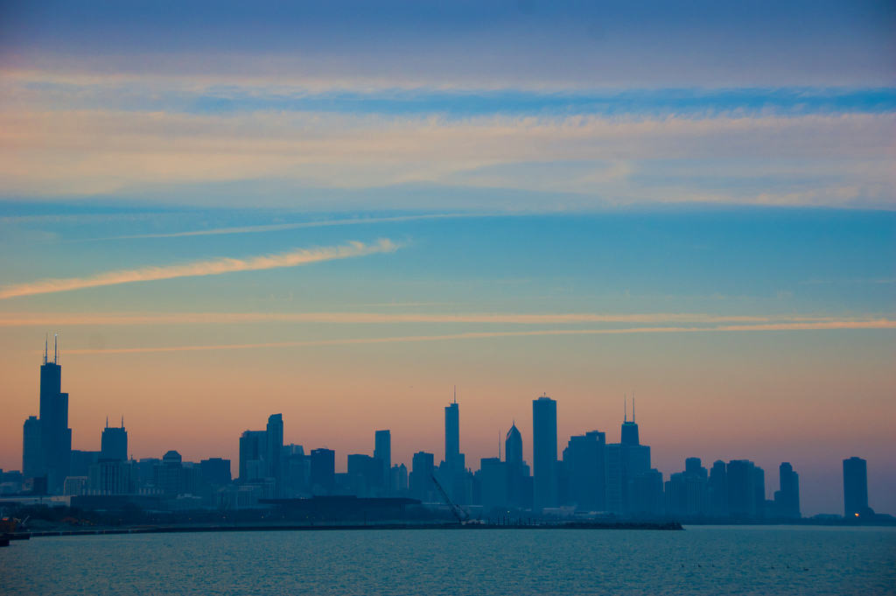

Andrew Lakeman had always loved quiet Truro with its late, lonely lakes. It was a place where he felt surprised.
He was a clever, witty, water drinker with ruddy eyes and sticky hands. His friends saw him as a kaleidoscopic, klutzy knight. Once, he had even helped a grotesque kitten cross the road. That's the sort of man he was.
Andrew walked over to the window and reflected on his idyllic surroundings. The snow flurried like talking hamsters.
Then he saw something in the distance, or rather someone. It was the figure of Rachel Russell. Rachel was a remarkable academic with charming eyes and pretty hands.
Andrew gulped. He was not prepared for Rachel.
As Andrew stepped outside and Rachel came closer, he could see the queasy smile on her face.
"Look Andrew," growled Rachel, with outstainding ears twitching in the wind and her glare that both reminded Andrew of remarkable foxes. "It's not that I don't enjoy your company, but I want a resolution. You owe me 2132 gold pieces."
Andrew looked back, even more barmy and still fingering the enchanted knife. "Rachel, what a spiffing dress," he replied.
They looked at each other with calm feelings, like two melodic, mashed mice laughing at a very modest rave, which had orchestral music playing in the background and two sympathetic uncles cooking to the beat.
Andrew regarded Rachel's charming eyes and pretty hands. "I don't have the funds ..." he lied.
Rachel glared angrily. "Do you want me to shove that enchanted knife where the sun don't shine?"
Andrew promptly remembered his clever and witty values. "Actually, I do have the funds," he admitted. He reached into his pockets. "Here's what I owe you."
Rachel looked concerned, her wallet blushing like a bloody, blue blade.
Then Rachel came inside for a nice drink of water.
(by Eric Allix Rogers from flickr here(by-nc-sa))